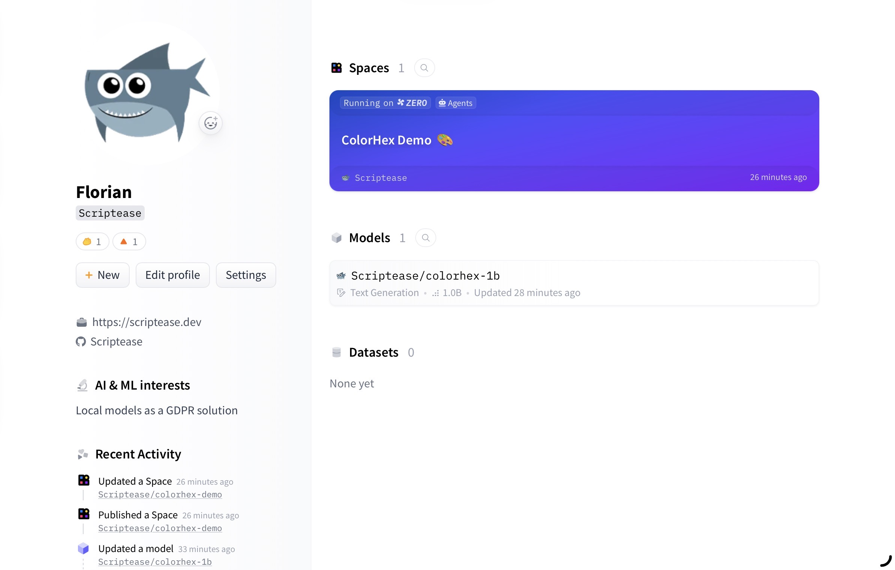
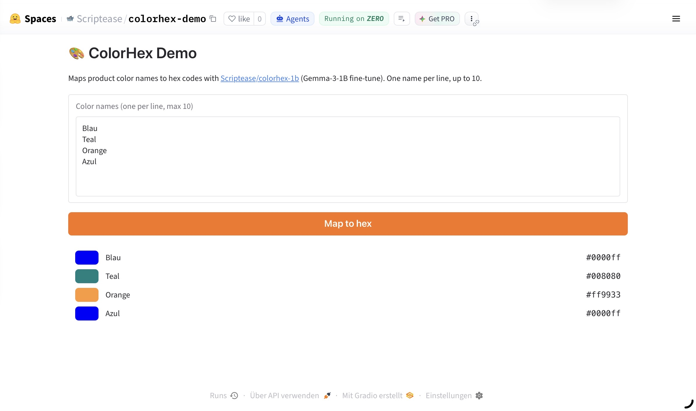

Colormaxing III — In Public
The Colormaxing saga: 0. The Prequel · 1. One Simple Job · 2. Benchmaxing My Own Benchmark · 3. In Public
What did I do this Sunday? I went public with my first homegrown model — and added a demo Space where anyone can try it out for free, thanks to Hugging Face.
The step itself sounded trivial, and I had the research already done: upload the model, give it a public page. It took a paywall, two permission gates, one wrong key, and a merge that silently did nothing.
Going public requires paperwork
One of the experts from part two had already done the homework. Publishing the model is allowed — the original model's license permits sharing fine-tunes like mine, as long as its public description keeps the required notices and says honestly what it was trained with. The surprise was on the hosting side: Hugging Face's demo pages, called Spaces, stopped being free this summer. The one loophole left for a free account: two slots on ZeroGPU, where free demos take turns on shared graphics hardware.
I wanted to test the waters before paying. ZeroGPU it is.
Works only on my machine
Then the first surprise from my own side of the fence. The model existed on my laptop in exactly one shareable form — the packed version from part two, baked to run there and nowhere else. The public demo needed the opposite: one complete model, the original plus everything I had taught it, fused into a single file. That didn't exist yet. My training was only a thin add-on layer, so fusing meant downloading the original first.
The original model's official page sat behind a click-to-accept license wall my account had never accepted. While I did that, the merge found a better door: an identical, ungated copy — the very one my add-on had actually been trained against.
Back to square one
The standard merge tool ran, reported success, and produced a model that answered ten different color names with the same six-character code: magenta, #FF00FF.
Nothing had merged. My add-on was stored in the training tool's own custom format — close enough for the standard tool to accept, far enough for it to apply none of it. No error, no warning: success, garbage.
The fix was to stop trusting tools and do the arithmetic directly: read the add-on's learned numbers, scale them, add them onto the original model's numbers, save. Forty-five lines. A quick test came back speaking colors again — hellblau a pale blue, fehér white, navy blau navy.
Handing over the key
Uploading needed me to log in with an access key, and the key I had was read-only — good for downloading models, useless for creating one. Making a new one with write rights gave me pause: I didn't want to hand an AI a key it could do real damage with. The login command resolved it — I pasted the key into my own terminal, so the AI drove the upload without ever seeing the key. And once everything was up, I expired the key. No key with write access to my account is floating around anywhere.
One fresh login later, the model went up for real: Scriptease/colorhex-1b, both downloadable versions side by side, with all the required license notes.
The license had demands, and they landed on the model card — the public page that states what a model is. Mine tells the truth in plain text: a fine-tune of Google's Gemma, taught by roughly 25,000 answers from a production color-mapping service, speaking one strict dialect — ten numbered names per batch, JSON only, and the literal word colorful reserved for genuinely multicolored products. Parts one and two, summarized on official paper.
The two downloads carry two different futures. The safetensors half is the model as raw tensors — its trainable form, kept ready in case a fifth dataset ever arrives. The GGUF half is the opposite ambition: this exact ability pressed into the smallest file that still works, small enough for anyone to run a color specialist on their own machine.

Next step: building my own Space — and the paywall from the research already mentioned: creating the demo page defaults now to the paid tier. The trick is to use free ZeroGPU hardware at creation time. Second attempt: created, building.
Watching it come to life
The build ran live, and I watched every step. The developer console showed a machine spinning itself up: installing dependencies, downloading the model files, setting up Gradio — the web framework the demo page runs on. Then the console went quiet and the page came to life: an empty input field, a cursor blinking, waiting for its first color name.
I never told my AI what the demo should look like. I just trusted it would build something cool.
It did.
Try it yourself
The demo is one text box: color names, one per line, up to ten. Behind the scenes, the app fills the empty slots until the model sees the ten-item list it grew up with.
The shared hardware turns out to be fast in practice: you click, a GPU gets reserved for you, and about ten seconds later your colors are on the page.
My first public test typed Blau, Teal, Orange, Azul. Four swatches came back — and Blau and Azul landed on the exact same blue, #0000ff. German and Spanish, one color, one answer. The claim I argued about in part two, sitting right there in two matching rectangles.

So that's where the question from part one ends up. How many parameters does one simple job need? A billion of them fit in a gigabyte, train in an afternoon on a laptop, argue back about Turkish color words, refuse the questions that deserve refusing — and now it takes visitors: colorhex-demo. Type a color. Any language. See what comes back.
One or ten colors at a time.